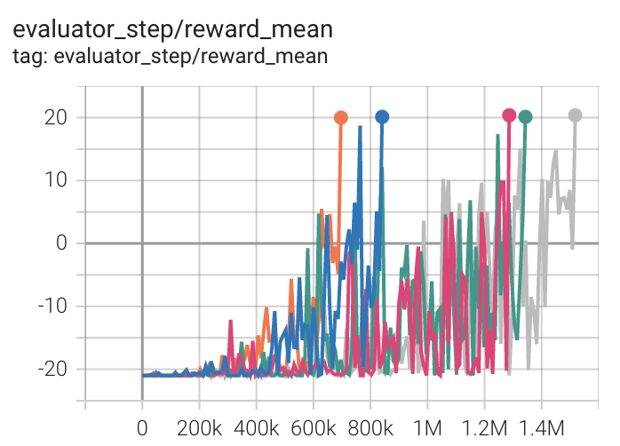
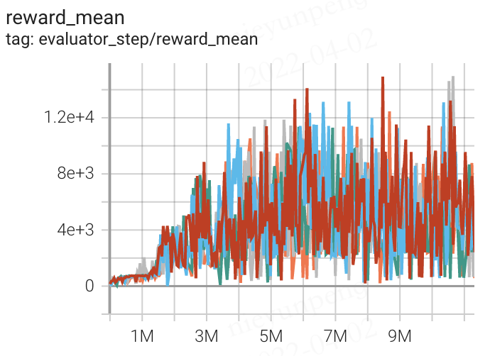
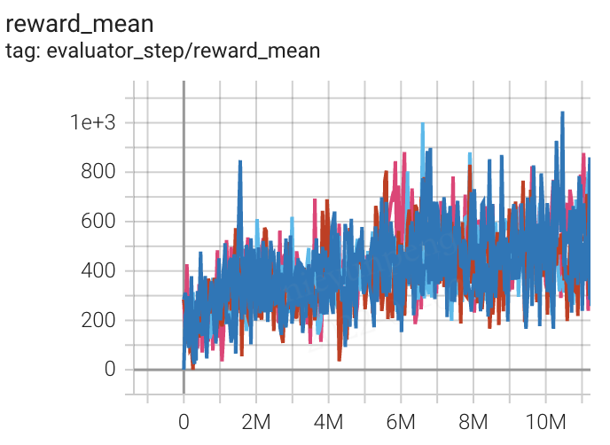

SQIL¶
Overview¶
Soft Q imitation learning (SQIL) is an off-policy maximum entropy Q learning algorithm together with imitation learning. SQIL was first proposed in SQIL: Imitation Learning via Reinforcement Learning with Sparse Rewards, which combines soft Q-learning with imitation learning. In the domain of discrete action spaces, soft Q learning proposed in Reinforcement Learning with Deep Energy-Based Policies learns stochastic (maximum entropy) policies instead of determistic policies comparing to the deep Q learning algorithm.
Quick Facts¶
SQIL is a model-free and value-based RL algorithm.
SQIL is SQL incorporated with Imitation learning.
SQIL supports both discrete and continuous action spaces, which is the same as SQL.
SQIL is an off-policy algorithm.
In DI-engine, SQIL uses eps-greedy for exploration.
The DI-engine implementation of SQIL only supports discrete action spaces for now.
The advantages of SQIL include: i. More robustness in the face of uncertain dynamics; ii. A natural incorporation with exploration.
SQIL can be regarded as regularized behavior cloning, which gains advantage over general behavior cloning.
Key Equations or Key Graphs¶
SQIL is a behavior cloning variant of SQL, so you may refer to SQL doc first.
SQIL performs three small but important modifications on SQL:
It initially fills the agent’s experience replay buffer with demonstrations, where the rewards are set to a constant r = +1.
As the agent interacts with the environment and accumulates new experiences, it adds them to the replay buffer, and sets the rewards for these new experiences to a constant r = 0.
It balances the number of demonstration experiences and new experiences (50% each) in each sample from the replay buffer.
BC is a simple approach that seeks to imitate the expert’s actions using supervised learning – in particular, greedily maximizing the conditional likelihood of the demonstrated actions given the demonstrated states, without reasoning about the consequences of actions. Theoretically, It can be shown that SQIL is equivalent to augmenting BC with a regularization term that incorporates information about the state transition dynamics into the imitation policy, and thus enables long-horizon imitation.
Specifically, recalling from SQL, the soft Q values are a function of the rewards and dynamics, given by the the soft Bellman equation:
The policy \(\pi\) forms a Boltzmann distribution over actions:
Rearrange the above function, we obtain the formula for the reward:
Therefore, the regular BC can be derived as follows:
The regularized BC is formulated through the prior work Boosted and reward regularized classification for apprenticeship learning where Q is regularized with a sparsity prior on the above rewards. By adding BC with this regularization, our final regularized BC target incorporates information about the state transition dynamics into the imitation learning objective, since \(R_{q}(s,a)\) is a function of an expectation over next state \(s'\). Formally, its formula is given as follows:
where where \(\lambda \in \mathbb{R}_{>0}\) is a constant hyperparameter, and \(\delta\) denotes the squared soft Bellman error defined in the equation in the Pseudo-code part below. The BC loss encourages \(Q\) to output high values for demonstrated actions at demonstrated states, and the penalty term propagates those high values to nearby states. In other words, \(Q\) outputs high values for actions that lead to states from which the demonstrated states are reachable. Hence, when the agent finds itself far from the demonstrated states, it takes actions that lead it back to the demonstrated states.
Surprisingly, it can be proved that the gradient of the regularized BC loss in the above equation is proportional to the gradient of the SQIL loss in line 4 of Algorithm 1 below, plus an additional term that penalizes the soft value of the initial state \(s_{0}\)
For the full derivation, please refer to Section A.1 of the appendix in the original paper.
In summary, SQIL solves a similar optimization problem to regularized BC proposed in Boosted and reward regularized classification for apprenticeship learning. However, SQIL can be motivated as a more practical and trivial way to implement the ideas for the regularized BC. Furthermore, the ablation study from the experiments in the paper suggests that SQIL actually performs better than the regularized BC.
Implementations¶
The default config is defined as follows:
- class ding.policy.sql.SQLPolicy(cfg: dict, model: Optional[Union[type, torch.nn.modules.module.Module]] = None, enable_field: Optional[List[str]] = None)[source]¶
- Overview:
Policy class of SQL algorithm.
The Bellman update of SQIL/SQL and the Q-value function update are defined in the function q_nstep_sql_td_error of ding/rl_utils/td.py:
def q_nstep_sql_td_error(
data: namedtuple,
gamma: float,
alpha: float,
nstep: int = 1,
cum_reward: bool = False,
value_gamma: Optional[torch.Tensor] = None,
criterion: torch.nn.modules = nn.MSELoss(reduction='none'),
) -> torch.Tensor:
"""
Overview:
Multistep (1 step or n step) td_error for q-learning based algorithm
Arguments:
- data (:obj:`q_nstep_td_data`): the input data, q_nstep_sql_td_data to calculate loss
- gamma (:obj:`float`): discount factor
- alpha (:obj:｀float`): A parameter to weight entropy term in a policy equation
- cum_reward (:obj:`bool`): whether to use cumulative nstep reward, which is figured out when collecting data
- value_gamma (:obj:`torch.Tensor`): gamma discount value for target soft_q_value
- criterion (:obj:`torch.nn.modules`): loss function criterion
- nstep (:obj:`int`): nstep num, default set to 1
Returns:
- loss (:obj:`torch.Tensor`): nstep td error, 0-dim tensor
- td_error_per_sample (:obj:`torch.Tensor`): nstep td error, 1-dim tensor
Shapes:
- data (:obj:`q_nstep_td_data`): the q_nstep_td_data containing\
['q', 'next_n_q', 'action', 'reward', 'done']
- q (:obj:`torch.FloatTensor`): :math:`(B, N)` i.e. [batch_size, action_dim]
- next_n_q (:obj:`torch.FloatTensor`): :math:`(B, N)`
- action (:obj:`torch.LongTensor`): :math:`(B, )`
- next_n_action (:obj:`torch.LongTensor`): :math:`(B, )`
- reward (:obj:`torch.FloatTensor`): :math:`(T, B)`, where T is timestep(nstep)
- done (:obj:`torch.BoolTensor`) :math:`(B, )`, whether done in last timestep
- td_error_per_sample (:obj:`torch.FloatTensor`): :math:`(B, )`
"""
q, next_n_q, action, next_n_action, reward, done, weight = data
assert len(action.shape) == 1, action.shape
if weight is None:
weight = torch.ones_like(action)
batch_range = torch.arange(action.shape[0])
q_s_a = q[batch_range, action]
target_v = alpha * torch.log(torch.sum(torch.exp(next_n_q / alpha), 1))
target_v[target_v == float("Inf")] = 20
target_v[target_v == float("-Inf")] = -20
# For an appropriate hyper-parameter alpha, these hardcodes can be removed.
# However, algorithms may face the danger of explosion for other alphas.
# The hardcodes above are to prevent this situation from happening
record_target_v = copy.deepcopy(target_v) #add the value function into tensorboard
if cum_reward:
if value_gamma is None:
target_v = reward + (gamma ** nstep) * target_v * (1 - done)
else:
target_v = reward + value_gamma * target_v * (1 - done)
else:
target_v = nstep_return(nstep_return_data(reward, target_v, done), gamma, nstep, value_gamma)
td_error_per_sample = criterion(q_s_a, target_v.detach())
return (td_error_per_sample * weight).mean(), td_error_per_sample, record_target_v
We use an epsilon-greedy strategy when implementing the SQIL/SQL policy. How we pick actions is implemented in EpsGreedySampleWrapper_sql of ding/model/wrappers/model_wrappers.py
class EpsGreedySampleWrapperSql(IModelWrapper):
def forward(self, *args, **kwargs):
eps = kwargs.pop('eps')
alpha = kwargs.pop('alpha')
output = self._model.forward(*args, **kwargs)
assert isinstance(output, dict), "model output must be dict, but find {}".format(type(output))
logit = output['logit']
assert isinstance(logit, torch.Tensor) or isinstance(logit, list)
if isinstance(logit, torch.Tensor):
logit = [logit]
if 'action_mask' in output:
mask = output['action_mask']
if isinstance(mask, torch.Tensor):
mask = [mask]
logit = [l.sub_(1e8 * (1 - m)) for l, m in zip(logit, mask)]
else:
mask = None
action = []
for i, l in enumerate(logit):
if np.random.random() > eps:
prob = torch.softmax(output['logit'] / alpha, dim=-1)
prob = prob / torch.sum(prob, 1, keepdims=True)
pi_action = torch.zeros(prob.shape)
pi_action = Categorical(prob)
pi_action = pi_action.sample()
action.append(pi_action)
else:
if mask:
action.append(sample_action(prob=mask[i].float()))
else:
action.append(torch.randint(0, l.shape[-1], size=l.shape[:-1]))
if len(action) == 1:
action, logit = action[0], logit[0]
output['action'] = action
return output
We have two buffers: one buffer is for new data which is collected through interacting with the environment and the other one is for demonstration data. We obtain the demonstration data online. That is, we use a well-trained model to generate data in the collecting stage and push them into the demonstration buffer. In learning process, we sample from these two buffers separately shown as follows:
# During the learning stage
for i in range(cfg.policy.learn.update_per_collect):
train_data_new = replay_buffer_new.sample(
(learner.policy.get_attribute('batch_size') // 2), learner.train_iter
)
train_data_demonstration = replay_buffer_demonstration.sample(
(learner.policy.get_attribute('batch_size') // 2), learner.train_iter
)
if train_data_new is None and train_data_demonstration is None:
train_data = None
else:
train_data = train_data_new + train_data_demonstration
if train_data is not None:
learner.train(train_data, collector.envstep)
We also need to modify rewards for new data and demonstration data. Taking the CartPole environment as an example:
new_data = collector.collect_data(learner.train_iter, policy_kwargs={'eps': eps})
for i in range(len(new_data)):
device = new_data[i]['obs'].device
new_data[i].reward = torch.tensor([0.]).to(device)
Regarding the demonstration data, we can leave these rewards unchanged. For a general reward modification, please refer to ding//entry/serial_entry_sqil.py.
Benchmark¶
environment |
best mean reward |
evaluation results |
config link |
comparison |
|---|---|---|---|---|
Pong (PongNoFrameskip-v4) |
20 |
 | ||
Qbert (QbertNoFrameskip-v4) |
14941 |
 | ||
SpaceInvaders (SpaceInvadersNoFrame skip-v4) |
1002 |
 |
P.S.：
The above results are obtained by running the same configuration on five different random seeds (0, 1, 2, 3, 4)
References¶
Siddharth Reddy, Anca D. Dragan, Sergey Levine: “SQIL: Imitation Learning via Reinforcement Learning with Sparse Rewards”, 2019; [https://arxiv.org/abs/1905.11108 arXiv:1905.11108].
Haarnoja, Tuomas, et al. “Reinforcement learning with deep energy-based policies.” International Conference on Machine Learning. PMLR, 2017.
Piot, Bilal, Matthieu Geist, and Olivier Pietquin. “Boosted and reward-regularized classification for apprenticeship learning.” Proceedings of the 2014 international conference on Autonomous agents and multi-agent systems. 2014.